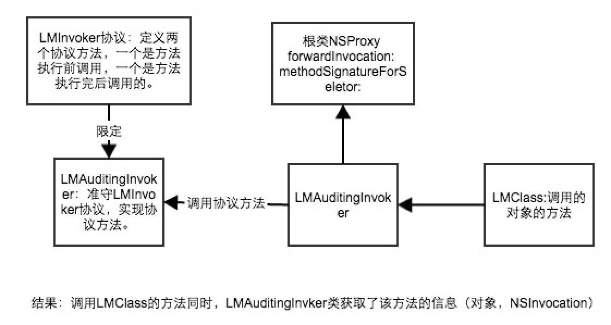

使用运行时系统API
//创建一个类
Class widgetClass = objc_allocateClassPair([NSObject class], "Widget", 0);
//向这个类添加一个方法
const char *type = "v@:";
class_addMethod(widgetClass, @selector(display), (IMP)display, type);
//向这个类添加一个实例变量
const char *height = "height";
class_addIvar(widgetClass, height, sizeof(id), rint(log2(sizeof(id))), @encode(id));
//注册这个类
objc_registerClassPair(widgetClass);
//创建一个widget变量并设置实例变量的值
id widget = [[widgetClass alloc] init];
id value = [NSNumber numberWithInt:5];
[widget setValue:value forKey:[NSString stringWithUTF8String:height]];
NSLog(@"widget instance height = %@",[widget valueForKey:[NSString stringWithUTF8String:height]]);
//向widget发送消息
objc_msgSend(widget, NSSelectorFromString(@"display"));
//以动态方式向widget添加一个属性
NSNumber *width = [NSNumber numberWithInt:20];
objc_setAssociatedObject(widget, @"width", widget, OBJC_ASSOCIATION_RETAIN_NONATOMIC);
//获取该变量的值并显示他
id result = objc_getAssociatedObject(widget, @"width");
NSLog(@"width = %@",result);
定义实现函数：
static void display (id self, SEL _cmd){
NSLog(@"Invoking method with selector %@ on %@ instance",NSStringFromSelector(_cmd),[self class]);
}
OC方法就是一个至少接收两个参数（self和_cmd）的C语言函数。
创建并注册类
class_addMethod(widgetClass, @selector(display), (IMP)display, type);
参数：1.添加该方法的类 2.设置被添加方法名称的选择器 3.实现该方法的函数 4.类型编码
类型编码：必须以固定顺序排列：第一个编码用于设置返回值，第二个编码用于设置方法的隐式参数self（类型id），第三个编码用于设置方法的隐式参数_cmd(类型SEL),其他编码用于设置方法的显式参数类型。
v代表void类型，@代表SEL类型。
以动态方式向类实例添加变量
objc_setAssociatedObject(widget, @"width", width, OBJC_ASSOCIATION_RETAIN_NONATOMIC);
在创建关联对象时，需要设置需关联的对象、代表关联关系的关键字、关联对象的内存管理策略和它的值
先要理解NSProxy这个类
NSProxy是一个抽象父类定义一个API的对象充当其他对象或对象的替身。
可以通过继承它，并重写这两个方法以实现消息转发到另一个实例
- (void)forwardInvocation:(NSInvocation *)anInvocation;
- (NSMethodSignature *)methodSignatureForSelector:(SEL)sel;
可以实现消息的转发。
AOP为Aspect Oriented Programming的缩写，意为：面向切面编程，通过预编译方式和运行期动态代理实现程序功能的统一维护的一种技术。
AOP将功能与程序中的其他组成部分分割开。
利用消息转化和NSProxy类一起使用，可以在OC中获取不错AOP机制
功能实现的过程

LMInvoker协议
定义两个协议方法
//必须实现的方法
@required
//能够在调用对象中的方法前执行对功能的横切
-(void) preInvoke:(NSInvocation *)inv withTarget:(id)target;
@optional
//能够在调用对象中的方法后执行对功能的横切
-(void) postInvoke:(NSInvocation *)inv withTarget:(id) target;
LMAuditingInvoker
准守LMInvoker协议的类
@implementation LMAuditingInvoker
-(void)preInvoke:(NSInvocation *)inv withTarget:(id)target{
NSLog(@"执行方法前selector%@, object:%@",NSStringFromSelector([inv selector]),[target class]);
}
-(void)postInvoke:(NSInvocation *)inv withTarget:(id)target{
NSLog(@"执行方法后selector%@, object:%@",NSStringFromSelector([inv selector]),[target class]);
}
@end
LMAspcetProxy
获取横切对象和方法
@interface LMAspcetProxy : NSProxy
@property (nonatomic, strong) id proxyTarget;
@property (nonatomic, strong) id<LMInvoker> invoker;
@property (nonatomic, strong, readonly) NSMutableArray *selectors;
-(id)initWithObject:(id)object andInvoker:(id<LMInvoker>)ivoker;
/**
初始化LMAspcetProxy
@param object 被切对象
@param selectors 被切的对象里需要监听的方法数组
@param invoker 准守LMInvoker协议的对象
@return LMAspcetProxy对象
*/
-(id)initWithObject:(id)object selectors:(NSArray *) selectors andInvoker:(id<LMInvoker>) invoker;
//注册方法 把方法添加到切面代理
-(void) registerSelector:(SEL) selector;
@end
实现文件
@implementation LMAspcetProxy
-(id)initWithObject:(id)object andInvoker:(id<LMInvoker>)ivoker{
return [self initWithObject:object selectors:nil andInvoker:ivoker];
}
-(id)initWithObject:(id)object selectors:(NSArray *)selectors andInvoker:(id<LMInvoker>)invoker{
_proxyTarget = object;
_invoker = invoker;
_selectors = [selectors mutableCopy];
return self;
}
/**
NSProxy方法：为另一个类实现的消息创建一个有效的方法签名
@param sel 该对象调用的方法
@return 有效的方法签名
*/
-(NSMethodSignature *)methodSignatureForSelector:(SEL)sel{
return [self.proxyTarget methodSignatureForSelector:sel];
}
/**
forwardInvocation:将选择器转发给一个真正实现了该消息的对象。
@param invocation 获取到该类调用的invocation（里面包含了target selector 和参数）
*/
-(void)forwardInvocation:(NSInvocation *)invocation{
//在调用目标方法前执行横切功能
if ([self.invoker respondsToSelector:@selector(preInvoke:withTarget:)]) {
if (self.selectors != nil) {
SEL methodSel = [invocation selector];
for (NSValue *selValue in self.selectors) {
//判断该方法有没有注册 有的话调用，invoker对象调用协议方法
if (methodSel == [selValue pointerValue]) {
[self.invoker preInvoke:invocation withTarget:self.proxyTarget];
break;
}
}
}else{
[self.invoker preInvoke:invocation withTarget:self.proxyTarget];
}
}
//调用目标方法 LMClass对像调用自己的方法
[invocation invokeWithTarget:self.proxyTarget];
//在调用目标方法后执行横切功能
if ([self.invoker respondsToSelector:@selector(postInvoke:withTarget:)]) {
if (self.selectors != nil) {
SEL methodSel = [invocation selector];
for (NSValue *selValue in self.selectors) {
if (methodSel == [selValue pointerValue]) {
[self.invoker postInvoke:invocation withTarget:self.proxyTarget];
break;
}
}
}else{
[self.invoker postInvoke:invocation withTarget:self.proxyTarget];
}
}
}
-(void)registerSelector:(SEL)selector{
NSValue *selValue = [NSValue valueWithPointer:selector];
[self.selectors addObject:selValue];
}
@end
测试LMAspcetProxy
LMClass *class = [[LMClass alloc] init];
NSNumber *addend1 = @(-25); NSNumber *addend2 = @(10); NSNumber *addend3 = @(15);
//为该对象创建代理
NSValue *selValue = [NSValue valueWithPointer:@selector(sumaddend1:addend2:)];
NSArray *selValues = @[selValue];
LMAuditingInvoker *invoker = [[LMAuditingInvoker alloc] init];
id classProxy = [[LMAspcetProxy alloc] initWithObject:class selectors:selValues andInvoker:invoker];
//使用指定的选择器向该代理发送消息
id integer = [classProxy sumaddend1:addend1 addend2:addend2];
NSLog(@"使用指定的选择器向该代理发送消息:%@",integer);
2017-03-03 23:37:40.413 Objective-C[32908:986614] 执行方法前selectorsumaddend1:addend2:, object:LMClass
2017-03-03 23:37:40.413 Objective-C[32908:986614] -25 + 10 = -15
2017-03-03 23:37:40.414 Objective-C[32908:986614] 执行方法后selectorsumaddend1:addend2:, object:LMClass
2017-03-03 23:37:40.414 Objective-C[32908:986614] 使用指定的选择器向该代理发送消息:-15